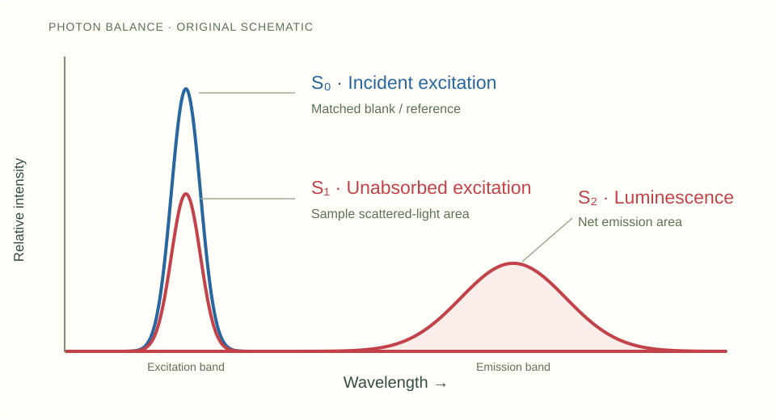

Sample absorption (%)
(S₀ − S₁) / S₀ × 100
The fraction of incident photons absorbed by the sample.
PHOTOPHYSICS / PHOTON BALANCE
Calculate PLQY and PLQE from integrating-sphere spectra, a relative standard, or a dilution series. Add a lifetime to explore radiative and nonradiative rates.
CIE diagrams, color rendering & LED efficiency ↗(S₀ − S₁) / S₀ × 100
The fraction of incident photons absorbed by the sample.
S₂ / S₀ × 100
Emitted photons divided by incident photons.
S₂ / (S₀ − S₁) × 100
Emitted photons divided by absorbed photons.
These are the S₀–S₁–S₂ definitions used throughout this calculator. Internal quantum yield here means absorbed-photon normalization (Φabs); external quantum yield means incident-photon normalization (Φinc). A sphere measures escaped light; intrinsic generation yield and escape-model corrections are separate quantities.
PLQY combines an emission measurement with an absorbed-photon or calibrated reference measurement. An ordinary emission spectrum on its own does not determine a quantum yield. LED electrical EQE, calculated per injected electron, is a separate quantity.
PRINCIPLE / EXCITATION & EMISSION
Blue: incident / blank trace. Red: sample trace, including unabsorbed excitation and photoluminescence.

Numerical example (separate from the schematic): S₀ = 1000, S₁ = 600, S₂ = 320.
Sample absorption = (1000 − 600) / 1000 × 100 = 40%.
External quantum yield = 320 / 1000 × 100 = 32%.
Internal quantum yield = 320 / (1000 − 600) × 100 = 80%.
CALCULATE / SELECT A METHOD
Your files are processed in your browser. CSV, TXT, TSV and DAT files are supported, up to 8 MB and 100,000 rows per trace.
Compare a matched blank/reference scan with the directly illuminated sample scan. Both must include the excitation and emission windows on a common, response-corrected intensity scale. This is the two-scan photon-balance method; indirect-excitation three-scan corrections are not applied automatically.
Signed baseline noise is retained by default to avoid a positive integration bias. Baselines and calibration multipliers are applied before integration. Spectra are never individually peak-normalized.
Use photon counts or integrals proportional to photon number on the same scale. S₂ must already have its matched blank/background emission subtracted.
An intrinsic generation-yield estimate can be calculated as Φabs / escape efficiency under a single-pass, no-photon-recycling model. Reabsorption and re-emission need a fuller transport model; the escape efficiency cannot be inferred from these two spectra.
Enter independent 1σ standard uncertainties for all three reported integrals, or leave all three blank. The propagation excludes shared calibration covariance and systematic errors; it is not inferred from arbitrary detector counts.
Upload the two traces, or select integrated values.
S₀ is the blank/reference excitation integral; S₁ is the sample’s unabsorbed excitation integral. Absorbed photons are S₀ − S₁. Net emission S₂ is the sample emission integral minus the matched blank emission. Sample absorption (%) = (S₀−S₁)/S₀ × 100; external quantum yield (%) = S₂/S₀ × 100; internal quantum yield (%) = S₂/(S₀−S₁) × 100. Report which normalization is used when calling a value PLQE, internal PLQY or external PLQY.
For radiant-power spectra, photon integration is proportional to ∫I(λ)λdλ; the common hc factor cancels. Photon-proportional spectra use ∫I(λ)dλ. Data per µm are converted to per nm when the wavelength unit is converted. Integration includes exact window boundaries and piecewise-linear data; no emission tails are extrapolated.
The sphere’s measured escaping emission does not automatically give the intrinsic internal generation yield of a film, glass or powder. Reflection, sphere throughput, self-absorption, parasitic blank absorption, saturation and pump drift require measurement-specific correction. Low absorptance amplifies subtraction error. For strongly scattering samples or indirect excitation, use the instrument’s validated acquisition/correction protocol.
Upload corrected emission spectra for the sample and a standard of known PLQY. Use the same excitation wavelength, excitation photon flux, collection geometry and instrument settings. Enter absorbances measured on the same dilutions used for emission.
Supply both corrected emission spectra and the reference/absorbance values.
Φsample = Φreference × (Fsample/Freference) × (freference/fsample) × (nsample/nreference)², with f = 1 − 10⁻ᴬ. The optically dilute approximation uses f ∝ A. F is the integrated, photon-corrected emission signal. The refractive-index factor assumes the usual matched cuvette collection geometry.
Keep absorbances low, typically below 0.1, and verify linearity with a dilution series. The finite-absorbance factor does not remove inner-filter or reabsorption effects. A reference value depends on its solvent, concentration, pH, temperature and excitation conditions; no standard’s value is assumed here. The method is intended for comparable dilute solutions rather than unmatched scattering powders or films. A dilution mismatch between absorption and emission must be resolved before calculation.
For each material, provide absorbance and the integrated, corrected photon-emission signal at several concentrations. Use a common excitation and acquisition scale. At least three distinct absorbances per series are required.
Upload or paste the absorbance–emission pairs.
With matched conditions, Φsample = Φreference × (sample slope/reference slope) × (nsample/nreference)². Free-intercept fits reveal offsets; forcing zero is an explicit choice. The reported fit-only standard error propagates ordinary least-squares slope errors and excludes reference-yield uncertainty, correlated calibration, concentration error and other systematic effects. R² alone does not establish a valid quantum-yield measurement.
For a single excited-state population, combine an intrinsic radiative-branching yield with its lifetime. A lifetime alone does not determine PLQY.
Enter a suitable PLQY and lifetime.
kr = Φ/τ and knr = (1−Φ)/τ; τrad = 1/kr and τnonrad = 1/knr. Apply these relations only when the measured yield represents intrinsic branching in the same population. Reabsorption, escape loss, multiple populations, energy transfer, upconversion or multiexciton processes need an appropriate kinetic model; an arbitrary average of a multiexponential decay is not sufficient.
METHOD / QUALITY CHECKS
Photon PLQY counts photons; the optical energy yield compares emitted and absorbed radiant energy. The sphere result includes both when spectra are supplied. It also reports absorptance, sampled peak positions, Stokes shifts and a photon-weighted emission centroid. These are calculated over your selected integration windows.
Capture complete pump and emission bands, including tails. Choose a solvent-only cell or matched substrate blank. Keep acquisition settings comparable, avoid detector saturation and verify wavelength-dependent detector response. Integration windows, signed background and calibration multipliers are exported with the result.
The two-scan balance does not automatically correct sphere throughput, strong scattering, parasitic absorption or reabsorption. Record sample thickness, concentration, geometry, excitation power and temperature. Test the appropriate sphere protocol or an independently validated correction before reporting an intrinsic yield.
State Φabs or Φinc, measurement method and wavelength basis, integration limits, reference-standard conditions and uncertainty. Values above 100% are retained and flagged rather than silently clipped; a multiple-photon process requires its own physical interpretation.
Measurement references: JASCO integrating sphere · JASCO relative method · Ossila PLQY · Ossila quantum efficiency · HORIBA’s introduction, hosted by AZoM · Shimadzu measurement example.
Additional methodological references: Edinburgh Instruments relative-yield derivation · A practical guide to measuring and reporting photophysical data (2025). Calculations and SVG figures are original implementations; example values are synthetic.